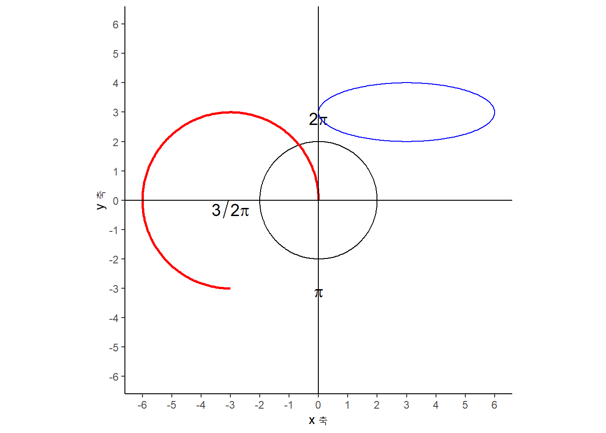

1 기하 기호
기하학에서 자주 사용되는 수학기소는 다음과 같다.
| 의미 | 수학기호 | \(\LaTeX\) |
|---|---|---|
| 선분(Line Segment) | \(\overline{\rm AB}\) | \overline{\rm AB} |
| 각(Angle) | \(\angle\) | \angle |
| 측정된 각(Measured Angle) | \(\measuredangle\) | \measuredangle |
| 삼각형(Triangle) | \(\triangle\) | \triangle |
| 정사각형(Square) | \(\square\) | \square |
| 합동( congruent ): 같은 모양, 크기 | \(\cong\) | \cong |
| 닮음(similar, same shape) | \(\sim\) | \sim |
| 평행(is parallel with) | \(\|\) | \| |
| 수선(perpendicular): 어떤 일정한 직선 또는 평면에 수직인 직선 | \(\perp\) | \perp |
2 다양한 수학 도형1
\begin{tikzpicture}
\begin{scope}[blend group = soft light]
\fill[red!30!white] ( 90:1.2) circle (2);
\fill[green!30!white] (210:1.2) circle (2);
\fill[blue!30!white] (330:1.2) circle (2);
\end{scope}
\node at ( 90:2) {Statistics};
\node at ( 210:2) {Mathematics};
\node at ( 330:2) {Coding};
\node [font=\Large] {Data Science};
\end{tikzpicture}Funky tikz
2.1 직각 삼각형
tikz \(\LaTeX\) 팩키지를 사용해서 직각삼각형을 그려보자.
\begin{tikzpicture}[scale=1.25]
\coordinate [label = left:$C$] (A) at (0,0);
\coordinate [label = right:$A$] (C) at (3,0);
\coordinate [label = above:$B$] (B) at (3,3);
\draw (A) --
node[above] {$a$} (B) --
node[right] {$c$} (C) --
node[below] {$b$} (A);
\draw (3, 0) rectangle (2.7, 0.3);
\end{tikzpicture}상기 tikz \(\LaTeX\) 코드 대신 삼각형을 ggplot으로 그려보자. geom_segment(), geom_point()를 사용하여 기하도형을 그리고 annotate()로 삼각형의 기호를 표시한다.
library(tidyverse)
ggplot() +
# 선분 AB, BC, CA
geom_segment(aes(x=0, y = 0, xend = 3, yend = 0)) +
geom_segment(aes(x=3, y = 0, xend = 3, yend = 3)) +
geom_segment(aes(x=3, y = 3, xend = 0, yend = 0)) +
# 점 A, B, C
geom_point(aes(x=0, y=0), size = 3) +
geom_point(aes(x=3, y=0), size = 3) +
geom_point(aes(x=3, y=3), size = 3) +
# 점에 라벨 붙이기
annotate("text", x = 0, y= 0, label = "C", hjust = 2, size = 5) +
annotate("text", x = 3, y= 0, label = "A", hjust = -1, size = 5) +
annotate("text", x = 3, y= 3, label = "B", vjust = -1, size = 5) +
# 선분에 라벨 붙이기
annotate("text", x = 1.5, y = 0.0, label = "italic(b)", vjust = 1, size = 5, parse = TRUE) +
annotate("text", x = 3.0, y = 1.5, label = "italic(c)", hjust = -1, size = 5, parse = TRUE) +
annotate("text", x = 1.5, y = 1.5, label = "italic(a)", vjust = -1, size = 5, parse = TRUE) +
# 직각 표시
geom_segment(aes(x=2.9, y = 0.0, xend = 2.9, yend = 0.1)) +
geom_segment(aes(x=2.9, y = 0.1, xend = 3.0, yend = 0.1)) +
theme_void() +
coord_equal(ratio = 1) +
scale_x_continuous(limits = c(-0.5, 3.5)) +
scale_y_continuous(limits = c(-0.5, 3.5))
2.2 교차점 [^intersection-point]
\((-1,2)\), \((2,-4)\) 두점을 지나는 직선과 \((-1,-1)\), \((2,2)\) 두점을 지나는 직선이 교차하는 교차점 \((0,0)\)을 tikz 팩키지로 구현해보자.
\begin{tikzpicture}
\draw[gray, thick] (-1,2) -- (2,-4);
\draw[gray, thick] (-1,-1) -- (2,2);
\filldraw[black] (0,0) circle (2pt) node[anchor=west] {Intersection Point};
\end{tikzpicture}상기 tikz \(\LaTeX\) 코드 대신 ggplot으로 시각화를 해보자. geom_segment()로 두 선분을 그리고 교차점을 geom_point()로 표식한다.
ggplot() +
# 선분 AB, BC
geom_segment(aes(x = -1, y = 2, xend = 2, yend = -4)) +
geom_segment(aes(x = -1, y = -1, xend = 2, yend = 2)) +
# 교차점
geom_point(aes(x=0, y=0), size = 3, color = "midnightblue") +
# 점에 라벨 붙이기
annotate("text", x = 0, y= 0, label = "교차점", hjust = -0.5, size = 5) +
theme_minimal() +
coord_equal(ratio = 1) +
scale_x_continuous(limits = c(-4, 4)) +
scale_y_continuous(limits = c(-4, 4)) +
labs(x = "x 축",
y = "y 축")2.3 직사각형
두 점 \((0,0)\), \((1,2)\)을 시작점과 끝점으로 삼아 rectangle 을 통해 직사각형을 그릴 수 있다.
\begin{tikzpicture}
\draw[step=1cm, gray, very thin] (-2,-2) grid (6,6);
\draw[blue, very thick] (0,0) rectangle (1,2);
\draw[red, very thick] (2,2) -- (5,2) -- (5,5) -- (2,5) -- cycle;
\draw[thick,->] (0,0) -- (6,0) node[anchor=north west] {x axis};
\draw[thick,->] (0,0) -- (0,6) node[anchor=south east] {y axis};
\foreach \x in {0,1,2,3,4,5}
\draw (\x cm,1pt) -- (\x cm,-1pt) node[anchor=north] {$\x$};
\foreach \y in {0,1,2,3,4,5}
\draw (1pt,\y cm) -- (-1pt,\y cm) node[anchor=east] {$\y$};
\end{tikzpicture}\usepackage{tkz-euclide} 팩키지를 활용하게 되면 좌표계를 기본으로 넣어 직사각형을 표현할 수 있다.
\begin{tikzpicture}
\tkzInit[xmax=6,ymax=6,xmin=-1,ymin=-1]
\tkzGrid
\tkzAxeXY
\draw[blue, very thick] (0,0) rectangle (1,2);
\draw (2,2) -- (5,2) -- (5,5) -- (2,5) -- cycle;
\tkzText[above](0,6.75){Draw Rectangle}
\end{tikzpicture}상기 tikz \(\LaTeX\) 코드 대신 ggplot으로 시각화를 해보자.
ggplot() +
# 직사각형
geom_rect( fill=alpha("blue",0), alpha=0.7,
aes(xmin = 0, ymin=0, xmax = 1, ymax=2)) +
geom_rect( fill=NA, alpha=0.7, color = "red",
aes(xmin = 2, ymin=2, xmax = 5, ymax=5)) +
theme_minimal() +
coord_equal(ratio = 1) +
scale_x_continuous(limits = c(-1, 6)) +
scale_y_continuous(limits = c(-1, 6)) +
labs(x = "x 축",
y = "y 축")2.4 원
좌표계를 설정하여 tikz 팩키지로 그리는 도형을 쉽게 알 수 있도록 밑바탕을 두고 원(circle), 타원(ellipse), 호(arc)를 각각 그려보자. 먼저 검정색 원은 중심이 \((0,0)\)이며 반지름이 2가 되도록 그려본다. 두번째 타원은 중심이 \((3,3)\) 이며, 장축이 3, 단축이 1이 되도록 작도한다. 마지막으로 호는 시작점이 \((0,0)\), \(0^{\circ} \sim 270^{\circ}\)가 되도록 하는데 반지름은 3으로 하여 작도한다.
\begin{tikzpicture}
\draw[thick,->] (0,0) -- (6,0) node[anchor=north west] {x axis};
\draw[thick,->] (0,0) -- (0,6) node[anchor=south east] {y axis};
\foreach \x in {0,1,2,3,4,5}
\draw (\x cm,1pt) -- (\x cm,-1pt) node[anchor=north] {$\x$};
\foreach \y in {0,1,2,3,4,5}
\draw (1pt,\y cm) -- (-1pt,\y cm) node[anchor=east] {$\y$};
\draw (0,0) circle (2cm);
\draw (3,3)[blue] ellipse (3cm and 1cm);
\draw (0,0)[red] arc (0:270:3cm);
\end{tikzpicture}상기 tikz \(\LaTeX\) 코드 대신 ggplot으로 시각화를 해보자. ggforce 팩키지 geom_circle()을 사용한다.
library(ggforce)
ggplot() +
geom_circle(aes(x0 = 0, y0 = 0, r = 2), color = "black") +
coord_fixed(ratio = 1) +
geom_arc(aes(x0 = 0, y0 = 0, r = 3, start = pi/2, end = pi, color = "red"))
데이터 과학자 이광춘 저작
kwangchun.lee.7@gmail.com